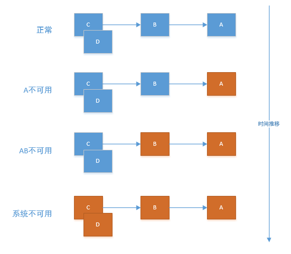
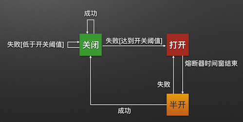

基于 Hystrix 的熔断器调研
什么是雪崩效应
在微服务架构中通常会有多个服务层调用，基础服务的故障可能会导致级联故障，进而造成整个系统不可用的情况，这种现象被称为服务雪崩效应。服务雪崩效应是一种因 服务提供者 的不可用导致 服务消费者 的不可用，并将不可用逐渐放大的过程。
如果下图所示：A 作为服务提供者，B 为 A 的服务消费者，C 和 D 是 B 的服务消费者。A 不可用引起了 B 的不可用，并将不可用像滚雪球一样放大到 C 和 D 时，雪崩效应就形成了。

熔断器（CircuitBreaker）
熔断器的原理很简单，如同电力过载保护器。它可以实现快速失败，如果它在一段时间内侦测到许多类似的错误，会强迫其以后的多个调用快速失败，不再访问远程服务器，从而防止应用程序不断地尝试执行可能会失败的操作，使得应用程序继续执行而不用等待修正错误，或者浪费 CPU 时间去等到长时间的超时产生。熔断器也可以使应用程序能够诊断错误是否已经修正，如果已经修正，应用程序会再次尝试调用操作。
熔断器模式就像是那些容易导致错误的操作的一种代理。这种代理能够记录最近调用发生错误的次数，然后决定是否允许操作继续，或者立即返回错误。熔断器开关相互转换的逻辑如下图：

Hystrix 是什么
在分布式系统，我们一定会依赖各种服务，那么这些个服务一定会出现失败的情况，Hystrix 就是这样的一个工具，它通过提供了逻辑上延时和错误容忍的解决力来协助我们完成分布式系统的交互。Hystrix 通过分离服务的调用点，阻止错误在各个系统的传播，并且提供了错误回调机制，这一系列的措施提高了系统的整体服务弹性。
Hystrix 是干嘛的
Hystrix 被设计用来做了下面几件事:
- 保护系统间的调用延时以及错误，特别是通过第三方的工具的网络调用
- 阻止错误在分布式系统之前的传播
- 快速失败和迅速恢复
- 错误回退和优雅的服务降级
- 提供近乎实时的系统监控，报警和动态操控
Hystrix特性
1.熔断器机制
熔断器很好理解，当 Hystrix Command 请求后端服务失败数量超过一定比例(默认50%)，熔断器会切换到开路状态(Open)。这时所有请求会直接失败而不会发送到后端服务。熔断器保持在开路状态一段时间后(默认5秒)，自动切换到半开路状态(HALF-OPEN)，这时会判断下一次请求的返回情况，如果请求成功，熔断器切回闭路状态(CLOSED)，否则重新切换到开路状态(OPEN)。Hystrix 的熔断器就像我们家庭电路中的保险丝，一旦后端服务不可用，熔断器会直接切断请求链，避免发送大量无效请求影响系统吞吐量，并且熔断器有自我检测并恢复的能力。
2.Fallback
Fallback 相当于是降级操作。对于查询操作, 我们可以实现一个 fallback 方法，当请求后端服务出现异常的时候，可以使用 fallback 方法返回的值。fallback 方法的返回值一般是设置的默认值或者来自缓存。
3.资源隔离
在Hystrix中, 主要通过线程池来实现资源隔离. 通常在使用的时候我们会根据调用的远程服务划分出多个线程池. 例如调用产品服务的 Command 放入 A 线程池，调用账户服务的 Command 放入 B 线程池. 这样做的主要优点是运行环境被隔离开了。这样就算调用服务的代码存在 bug 或者由于其他原因导致自己所在线程池被耗尽时，不会对系统的其他服务造成影响。但是带来的代价就是维护多个线程池会对系统带来额外的性能开销。如果是对性能有严格要求而且确信自己调用服务的客户端代码不会出问题的话，可以使用 Hystrix 的信号模式(Semaphores)来隔离资源。
Hystrix工作方式如下:
- 阻止一个单独的依赖耗尽系统的所有线程，比如(tomcat)
- 使用快速失败代替将这个请求排队
- 在任何可能失败的地方提供后退机制来确保用户不会看到错误
- 使用隔离技术(比如: 隔板，泳道，环路切断模式)降低一个依赖的失败对整个系统的影响
- 优化使得系统可以近乎实时的收集，监控，报警
- 优化使得系统可以近乎实时的修改，并且可以近乎实时生效
- 保护系统不仅仅在网络层面，也包括客户端层面的依赖执行的失败
Hystrix 的使用
因为 Hystrix 是一个开源的 Java 库，所以可以进行像官方示例那样直接用起来，下面我们介绍如何将 Hystrix 集成到 SpringBoot 项目中。
在pox.xml文件中加入：
1 | <dependency> |
在程序入口类加上：@EnableHystrix
在需要使用熔断器的地方标记注解即可：
1 | @HystrixCommand(fallbackMethod = "yyy") |
yyy 就是在 熔断器开启时 是我们要调用的函数。